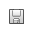

The Tournament Lobby is the launching point from where you will select tournaments to play. To start a tournament, first select one from the list on the left hand side. You can select from many popular limit and no-limit single and multi-table tournament structures, or any unfinished tournaments that you were playing.
Poker Academy comes with a number of pre-defined tournament structures as well as tools to create and edit your own structures. From the lobby you can create, delete, restore to default, import, export, and save your custom tournament structures.
|
|
Creates a new tournament structure that duplicates the settings of the previous structure you had selected. You will be prompted to enter a name, and you must ensure that all tournament names are unique. |
|
|
Deletes the currently selected custom tournament. You can not delete pre-defined tournaments (only edit them). |
| Restores the currently selected pre-defined tournament to its default settings. | |
|
|
Opens up a file chooser that will allow you to import other custom tournament structure files (.xml) into Poker Academy. Importing an invalid file will result in an error message being displayed, but will not affect the operation of the program. |
|
|
Opens up a file chooser that will allow you to save the current custom tournament structure file to disk. You can share these structures with friends and other Poker Academy members through our forums (www.poker-academy.com/forums). |
|  | Saves the current custom tournament structure to disk. The save button will become enabled once you make a change to your tournaments settings. |
The four tabs containing the configurable settings for the selected tournament structure include: Details, Structure, Players, and Payouts.
Details Tab
The Details tab contains a description of your tournament along with three editable sections: Game Time Details, Buy-Ins, Players.Game Time Details - lets you adjust the starting values for three main settings:
Starting Chips - lets you set the number of chips each player receives at the beginning of the tournament.
Starting Players - lets you adjust the number of players that will begin your tournament. This is the same as adjusting the slider above.
Players Per Table - lets you set the number of maximum number of players that will play at each table. Heads up tournaments are not yet supported, so the minimun number of players per table is three.Buy-Ins - lets you choose how much you want to buy into the tournament for. The list of available buy-ins represents which buy-ins are allowed for the structure. These buy-ins are used for tracking your stats in tournament play so you can calculate your return on investment. To select the buy-in you wish to use for your tournament, simply highlight the desired one before you start the tournament. Existing buy-ins can be edited by double-clicking on one of the numbers of the buy-in entry you wish to edit. You can also add and remove buy-ins allowed for the particular structure by using the (+) and (-) buttons located to the right of the buy-ins section.
Players - lets you set the minimum and maximum number of players allowed in your tournament structure. These minimum and maximum numbers represent the extreme left and right numbers on the slider at the top. Single table tournaments generally allow 2-10 players, while multi table tournaments generally allow 10 or more players.
Structure Tab
The structure tab allows you to edit the betting structure for the tournament including: Start Level, Level Length, Betting Type, and the Level Editor.Start Level - lets you determine which level of the tournament structure the tournament will begin at (i.e., instead of starting at the first level, you get to choose which of the beginning levels to skip). You can adjust this number using the arrows, or by typing one in yourself. Each structure has a different number of levels, and you may not exceed the last level of the structure.
Level Length - allows you to choose how long each level in a tournament will last. This can be based on Minutes, Hands, or Busts. Minutes means the levels will increase after a given amount of actual playing time has passed. Actual playing time is accumulated hand by hand and recorded from the time when you first hit the deal button to the end of the hand. This means that if you leave the program in between hands that time will not be considered when deciding when levels increase. Hands means the levels will increase after a given number of hands have been played. Busts means the levels will increase after a given amount of players have busted out of the tournament. Since there can be more than one bust per hand in the tournament, depending on the number of busts that happen in a hand and the value of this setting, levels can actually be skipped.
Betting Type - lets you choose the betting type that will be used for the entire tournament. No limit, means that you can bet up to your entire stack on any decision on any round, and the minimum bet has to be at least the value of the big blind. Limit, means a fixed limit structure, where all bets and raises are fixed based on increments of the big blind.
Level Editor - lets you edit the structure and blinds for your tournament. Each level has three editable columns: Ante, Small Blind, Big Blind. Double clicking on any of these columns will allow you to edit the appropriate value for that level. When you edit the small blind of a given level, the big blind will automatically be set to twice the small blind. Every tournament should have increasing blinds to force the action as the tournament progresses. The only rule when making a custom tournament level is: the big blind must be greater than or equal to the small blind of that level. Beyond that you are free to make any custom tournament structure you like. The (+) and (-) buttons located to the right of the level editor allow you to add / remove selected rows from the structure.
Players Tab
The Players tab lets you view and set the lineup for your tournament. Here you can select or configure which distribution of computer opponents or “bots” you would like to play against. A pull down box at the top allows you to select distributions or players stored on disk. A table is also displayed which lists the opponents and the distribution percentage they will appear with in the tournament. There are controls along the top that allow you to create, delete, save, import and export player distributions. There are also buttons on the side that allow you to add and remove rows from your distribution.Poker Academy offers a few standard pre-defined player distributions for both limit and no-limit games. To choose a new distribution, select one from the pull down box in the center above the players list.
Creates a new player distribution for the given betting type. Creating a new distribution will prompt you to enter a name, so you can easily select it later. A default random distribution will be created initally, which you can begin editing. Deletes the currently selected player distribution from disk. Saves the currently selected player distribution to disk. Opens up a file chooser that will allow you to import other player distribution files (.xml) into Poker Academy. Importing an invalid file will result in an error message being displayed, but will not affect the operation of the program. Opens up a file chooser that will allow you to save the current player distribution file to disk. You can share these distributions with friends and other Poker Academy members through our forums (www.poker-academy.com/forums). Adds a new row to the player distribution. All new rows will initially be set to random, allowing you to chose any engine or profile you like. removes the currently selected row from the distribution. To edit a player distribution click any opponent to bring up a menu containing all of the players available for the selected type of game. The first level of this menu lists the Artificial Intelligence engines and the submenus list specific profiles based on these engines. You can also choose to specify random bots from all AI engines, or choose random bots from specific AI engines, to help vary your tournament lineup.
Once you have selected a "bot", you can edit its distribution percentage by double-clicking on the third column in the player list. When you start your tournament the number of specific bots that appear will be based on the percentage you entered for it in the player list.Payouts Tab
The Payouts tab contains two sections: Choose Payouts and Payout Viewer.Choose Payouts - lets you choose what payout scheme you would like to use for your tournament. Poker Academy has provided a variety of different payout schemes for different sized tournaments. There are multi table tournament and sit n go payouts which will pay a certain number of players a percentage of the prize pool. As well, there are satellite payouts that will pay 1 winner for every 10, 20, or 50 players. Lastly, there is a winner take all payout scheme that will only pay the top place finisher. Beside the payout chooser you can set the Initial Prize Pool and increase the ammount of money in the prize pool that the players are playing for. Below is the value of the prize pool, and the current number of players in your tournament. Adjusting the number of players using the slider above will alter the prize pool, and the corresponding payouts in the payout viewer.
Payout Viewer - Lets you view the payouts for the current tournament based on: the Number of Players, the Buy-In and the Initial Prize Pool. There are three columns: Place, Payout, and Prize. The Place column shows the range of positions the payouts correspond to for that row. The Payout column is the percentage of the total prize pool that each place in that range will receive. The Prize column contains the amount of dollars each place listed in that row will receive.
|
Deletes the current unfinished tournament from disk. |
Standings Tab
The Standings tab shows you a list of all players in your tournament, how many chips they have left, and any payouts they have received.Summary Tab
The Summary tab displays a short description of your tournament, with information about the starting chips, level length, and the current level and blinds. Also present is information comparing your chip stack with all the chips in play, the average chip count, and the amount of the big blind. This information is crucial to help determine how well you were doing in the tournament when you stopped playing it. Below that is a chart of how the largest, average, and smallest stacks compare.Levels Tab
The Levels tab displays the levels and structure of your tournament. The Level Number, Blinds, and Antes are shown. The blinds will increase as the level number increases. Some tournaments will not have antes. This list is fixed upon tournament start.Payouts Tab
The Payouts tab displays the payout information for your tournament. The place is the position a player finishes. Payout is the percentage of the prize pool that place will receive. Prize is the dollar amount that place will receive. This list is fixed upon tournament start.